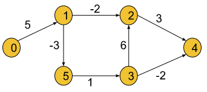
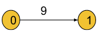
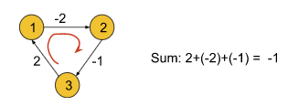
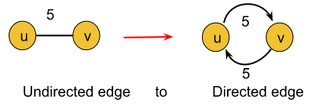
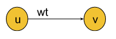
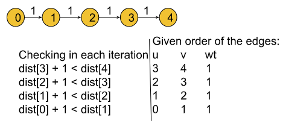

Problem Statement: Given a weighted, directed and connected graph of V vertices and E edges, Find the shortest distance of all the vertices from the source vertex S.
Note: If the Graph contains a negative cycle then return an array consisting of only -1.
Example 1:
Input Format:
V = 6,
E = [[3, 2, 6], [5, 3, 1], [0, 1, 5], [1, 5, -3], [1, 2, -2], [3, 4, -2], [2, 4, 3]],
S = 0
Result: 0 5 3 3 1 2
Explanation: Shortest distance of all nodes from the source node is returned.
Example 2:
Input Format: V = 2, E = [[0,1,9]], S = 0
Result: 0 9
Explanation: Shortest distance of all nodes from the source node is returned.
Solution
Disclaimer: Don't jump directly to the solution, try it out yourself first. Problem link.
Solution:
The bellman-Ford algorithm helps to find the shortest distance from the source node to all other nodes. But, we have already learned Dijkstra's algorithm (Dijkstra's algorithm article link) to fulfill the same purpose. Now, the question is how this algorithm is different from Dijkstra's algorithm.
While learning Dijkstra's algorithm, we came across the following two situations, where Dijkstra's algorithm failed:
If the graph contains negative edges.
If the graph has a negative cycle (In this case Dijkstra's algorithm fails to minimize the distance, keeps on running, and goes into an infinite loop. As a result it gives TLE error).
Negative Cycle: A cycle is called a negative cycle if the sum of all its weights becomes negative. The following illustration is an example of a negative cycle:

Bellman-Ford's algorithm successfully solves these problems. It works fine with negative edges as well as it is able to detect if the graph contains a negative cycle. But this algorithm is only applicable for directed graphs. In order to apply this algorithm to an undirected graph, we just need to convert the undirected edges into directed edges like the following:

Explanation: An undirected edge between nodes u and v necessarily means that there are two opposite-directed edges, one towards node u and the other towards node v. So the above conversion is valid.
After converting the undirected graph into a directed graph following the above method, we can use the Bellman-Ford algorithm as it is.
Intuition:
In this algorithm, the edges can be given in any order. The intuition is to relax all the edges for N-1( N = no. of nodes) times sequentially. After N-1 iterations, we should have minimized the distance to every node.
Let’s understand what the relaxation of edges means using an example.

Let's consider the above graph with dist[u], dist[v], and wt. Here, wt is the weight of the edge and dist[u] signifies the shortest distance to reach node u found until now. Similarly, dist[v](maybe infinite) signifies the shortest distance to reach node v found until now. If the distance to reach v through u(i.e. dist[u] + wt) is smaller than dist[v], we will update the value of dist[v] with (dist[u] + wt). This process of updating the distance is called the relaxation of edges.
We will apply the above process(i.e. minimizing the distance to reach every node) N-1 times in the Bellman-Ford algorithm.
Two follow-up questions about the algorithm: Why do we need exact N-1 iterations? Let’s try to first understand this using an example:

In the above graph, the algorithm will minimize the distance of the ith node in the ith iteration like dist[1] will be updated in the 1st iteration, dist[2] will be updated in the 2nd iteration, and so on. So we will need a total of 4 iterations(i.e. N-1 iterations) to minimize all the distances as dist[0] is already set to 0. Note: Points to remember since, in a graph of N nodes we will take at most N-1 edges to reach from the first to the last node, we need exact N-1 iterations. It is impossible to draw a graph that takes more than N-1 edges to reach any node.
How to detect a negative cycle in the graph?
We know if we keep on rotating inside a negative cycle, the path weight will be decreased in every iteration. But according to our intuition, we should have minimized all the distances within N-1 iterations(that means, after N-1 iterations no relaxation of edges is possible).
In order to check the existence of a negative cycle, we will relax the edges one more time after the completion of N-1 iterations. And if in that Nth iteration, it is found that further relaxation of any edge is possible, we can conclude that the graph has a negative cycle. Thus, the Bellman-Ford algorithm detects negative cycles.
Approach:
Initial Configuration:
distance array(dist[ ]): The dist[] array will be initialized with infinity, except for the source node as dist[src] will be initialized to 0.
The algorithm steps will be the following:
First, we will initialize the source node in the distance array to 0 and the rest of the nodes to infinity.
Then we will run a loop for N-1 times.
Inside that loop, we will try to relax every given edge. For example, one of the given edge information is like (u, v, wt), where u = starting node of the edge, v = ending node, and wt = edge weight. For all edges like this we will be checking if node u is reachable and if the distance to reach v through u is less than the distance to v found until now(i.e. dist[u] and dist[u]+ wt < dist[v]).
After repeating the 3rd step for N-1 times, we will apply the same step one more time to check if the negative cycle exists. If we found further relaxation is possible, we will conclude the graph has a negative cycle and from this step, we will return a distance array of -1(i.e. minimization of distances is not possible).
Otherwise, we will return the distance array which contains all the minimized distances.
Note: If you wish to see the dry run of the above approach, you can watch the video attached to this article. Code:
#include <bits/stdc++.h>
using namespace std;
class Solution {
public:
/* Function to implement Bellman Ford
* edges: vector of vectors which represents the graph
* S: source vertex to start traversing graph with
* V: number of vertices
*/
vector<int> bellman_ford(int V, vector<vector<int>>& edges, int S) {
vector<int> dist(V, 1e8);
dist[S] = 0;
for (int i = 0; i < V - 1; i++) {
for (auto it : edges) {
int u = it[0];
int v = it[1];
int wt = it[2];
if (dist[u] != 1e8 && dist[u] + wt < dist[v]) {
dist[v] = dist[u] + wt;
}
}
}
// Nth relaxation to check negative cycle
for (auto it : edges) {
int u = it[0];
int v = it[1];
int wt = it[2];
if (dist[u] != 1e8 && dist[u] + wt < dist[v]) {
return { -1};
}
}
return dist;
}
};
int main() {
int V = 6;
vector<vector<int>> edges(7, vector<int>(3));
edges[0] = {3, 2, 6};
edges[1] = {5, 3, 1};
edges[2] = {0, 1, 5};
edges[3] = {1, 5, -3};
edges[4] = {1, 2, -2};
edges[5] = {3, 4, -2};
edges[6] = {2, 4, 3};
int S = 0;
Solution obj;
vector<int> dist = obj.bellman_ford(V, edges, S);
for (auto d : dist) {
cout << d << " ";
}
cout << endl;
return 0;
}
Output: 0 5 3 3 1 2
Time Complexity: O(V*E), where V = no. of vertices and E = no. of Edges.
Space Complexity: O(V) for the distance array which stores the minimized distances.
import java.util.*;
/*
* edges: vector of vectors which represents the graph
* S: source vertex to start traversing graph with
* V: number of vertices
*/
class Solution {
static int[] bellman_ford(int V,
ArrayList<ArrayList<Integer>> edges, int S) {
int[] dist = new int[V];
for (int i = 0; i < V; i++) dist[i] = (int)(1e8);
dist[S] = 0;
// V x E
for (int i = 0; i < V - 1; i++) {
for (ArrayList<Integer> it : edges) {
int u = it.get(0);
int v = it.get(1);
int wt = it.get(2);
if (dist[u] != 1e8 && dist[u] + wt < dist[v]) {
dist[v] = dist[u] + wt;
}
}
}
// Nth relaxation to check negative cycle
for (ArrayList<Integer> it : edges) {
int u = it.get(0);
int v = it.get(1);
int wt = it.get(2);
if (dist[u] != 1e8 && dist[u] + wt < dist[v]) {
int temp[] = new int[1];
temp[0] = -1;
return temp;
}
}
return dist;
}
}
public class tUf {
public static void main(String[] args) {
int V = 6;
int S = 0;
ArrayList<ArrayList<Integer>> edges = new ArrayList<>() {
{
add(new ArrayList<Integer>(Arrays.asList(3, 2, 6)));
add(new ArrayList<Integer>(Arrays.asList(5, 3, 1)));
add(new ArrayList<Integer>(Arrays.asList(0, 1, 5)));
add(new ArrayList<Integer>(Arrays.asList(1, 5, -3)));
add(new ArrayList<Integer>(Arrays.asList(1, 2, -2)));
add(new ArrayList<Integer>(Arrays.asList(3, 4, -2)));
add(new ArrayList<Integer>(Arrays.asList(2, 4, 3)));
}
};
int[] dist = Solution.bellman_ford(V, edges, S);
for (int i = 0; i < V; i++) {
System.out.print(dist[i] + " ");
}
System.out.println("");
}
}
Output: 0 5 3 3 1 2
Time Complexity: O(V*E), where V = no. of vertices and E = no. of Edges.
Space Complexity: O(V) for the distance array which stores the minimized distances.
Special thanks to KRITIDIPTA GHOSH for contributing to this article on takeUforward. If you also wish to share your knowledge with the takeUforward fam, please check out this article. If you want to suggest any improvement/correction in this article please mail us at write4tuf@gmail.com